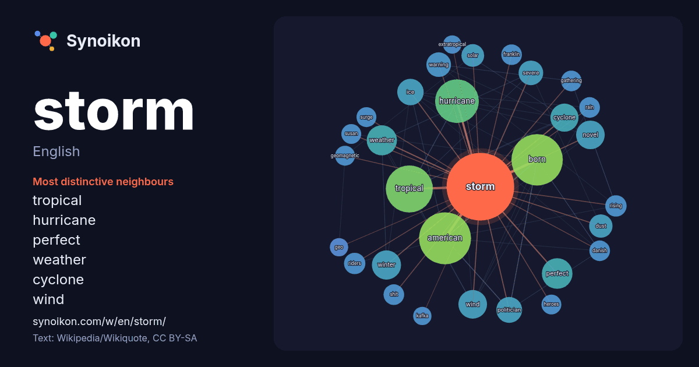

English · word of the day list
storm
The words found around it in 1677 instances from English Wikipedia, Wikiquote and Hacker News.

Most distinctive neighbours
- tropical 54×
- hurricane 51×
- perfect 26×
- weather 24×
- cyclone 24×
- wind 19×
- warning 18×
- dust 17×
- winter 17×
- severe 17×
- american 15×
- ice 15×
- novel 15×
- shit 15×
- solar 15×
- born 14×
- geomagnetic 14×
- gathering 14×
- politician 13×
- surge 13×
× = how many times more often than in general English Wikipedia text.
Most frequent neighbours
- american 89
- born 87
- tropical 73
- hurricane 63
- film 40
- season 39
- perfect 31
- weather 30
- winter 28
- novel 27
- wind 27
- cyclone 26
- major 26
- album 23
- ice 23
- politician 22
- severe 20
- warning 20
- game 19
- january 19
In context
- A storm is any disturbed state of the natural environment or the atmosphere of an astronomical body. It may be marked by significant disruptions to normal Wikipedia snippets · Storm
- A storm is a severe weather condition. Storm(s) or The Storm may also refer to: Storm Bay, Tasmania Wikipedia snippets · Storm (disambiguation)
- May and October. The first named storm of the season, Nokaen, developed on January 15, marking the first named storm to form in January since Pabuk during Wikipedia snippets · 2026 Pacific typhoon season
- the most Category 5 hurricanes. The first system of the season, Tropical Storm Amanda, formed in the open eastern Pacific on June 2. In July, Hurricane Wikipedia snippets · 2026 Pacific hurricane season
- Into the Storm may refer to: Into the Storm: On the Ground in Iraq (1997), a nonfiction book by American author Tom Clancy Into the Storm (novel) (2008) Wikipedia snippets · Into the Storm
- A solar storm is a disturbance on the Sun, which can emanate outward across the heliosphere, affecting the entire Solar System, including Earth and its Wikipedia snippets · Solar storm
- Tropical Storm Arthur, formed on June 17 and impacted much of the northwestern coast of the Gulf of Mexico. A little over a month later, Tropical Storm Bertha Wikipedia snippets · 2026 Atlantic hurricane season
- By Storm are an American experimental hip-hop duo consisting of rapper Nathaniel "RiTchie" Ritchie and producer Parker Corey. From 2012 to 2023, Ritchie Wikipedia snippets · By Storm
More English words
- art
- autumn
- bell
- bread
- bridge
- cat
- city
- climate
- clock
- death
- desert
- dog
- family
- food
- forest
- garden
- god
- gold
- health
- heart
- history
- honey
- horse
- island
- language
- life
- map
- mirror
- money
- mother
- mountain
- nature
- power
- rain
- road
- salt
- science
- shadow
- silence
- song
- star
- summer
- tea
- time
- train
- truth
- water
- winter
- work
Precomputed on 2026-10-09 with default settings (±5 words, medium corpus). The interactive map can refresh it with live data.